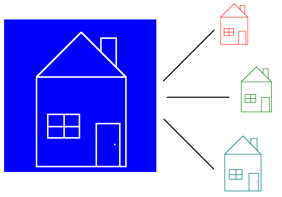
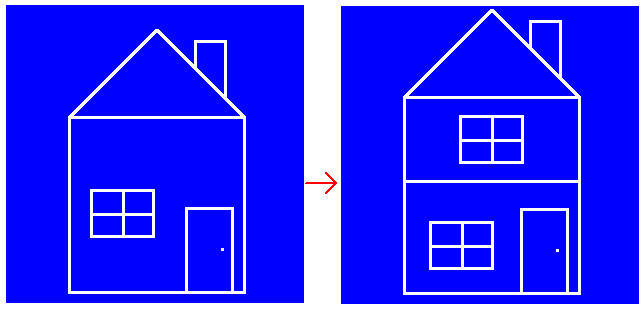

Classes are like blueprints. You can create multiple houses, with 1 blueprint. And like that we can create multiple objects from 1 class. 
For classes we're going to use a library: classic.
Click on classic.lua and then on Raw, and copy the code.
Go to your text-editor, create a new file called classic.lua and paste the code.
Now we have to require it.
function love.load()
Object = require "classic"
endAnd now we're ready to make a class. Create a new file called rectangle.lua, and put in the following code:
--! file: rectangle.lua
--Note how it uses a column (:) and not a dot (.)
Rectangle = Object:extend()
function Rectangle.new(self)
self.test = math.random(1, 1000)
endEverything will be explained. But first put this code in your main.lua.
--! file: main.lua
function love.load()
Object = require "classic"
--Don't forget to load the file
require "rectangle"
r1 = Rectangle()
r2 = Rectangle()
print(r1.test, r2.test)
endWhen you run the game, you´ll see that 2 random numbers are printed.
So let's go through this code step by step. First we create a new class with Rectangle = Object:extend(). This makes Rectangle become a class. This will be our blueprint. As opposed to properties, classes are usually written with an uppercase character.
In main.lua we say r1 = Rectangle(). Even though Rectangle is a table, we can still call it as if it's a function. How that works is for another chapter. But by calling Rectangle(), it creates a new instance. What that means is that it takes our blueprint and creates a new object with all the class its features. Every new instance is unique.
To prove that r1 is unique, we create another instance called r2. Both have the property test, but they have different values.
When we call Rectangle(), it executes Rectangle.new. This is what we call the constructor.
The parameter self, is the instance we're modifying. If we were to type Rectangle.test = math.random(0, 1000), we would be giving the property to the blueprint, and not to an instance made with the blueprint.
Let's make some changes to our class:
--! file: rectangle.lua
function Rectangle.new(self)
self.x = 100
self.y = 100
self.width = 200
self.height = 150
self.speed = 100
end
function Rectangle.update(self, dt)
self.x = self.x + self.speed * dt
end
function Rectangle.draw(self)
love.graphics.rectangle("line", self.x, self.y, self.width, self.height)
endIt's like the moving rectangle object we made in chapter 8. Except this time we put the code of the movement and drawing part in the object. Now we only need to call update and draw in main.lua.
--! file: main.lua
function love.load()
require "rectangle"
r1 = Rectangle()
r2 = Rectangle()
end
function love.update(dt)
r1.update(r1, dt)
end
function love.draw()
r1.draw(r1)
endWhen you run the game you'll see a moving rectangle.
So we created a class called Rectangle. We create an instance of that class called r1. So now r1 has the functions update and draw. We call these functions, and as first argument we pass the instance itself, r1. This is what self becomes in the functions.
It's kind of annoying though, how we have to pass r1 everytime we call one of its functions. Luckily, Lua has a shorthand for this. When we use a colon (:), the function-call will automatically pass the object left of the colon as first argument.
--! file: main.lua
function love.update(dt)
--Lua turns this into: r1.update(r1, dt)
r1:update(dt)
end
function love.draw()
--Lua turns this into: r1.draw(r1)
r1:draw()
endAnd we can do this with the functions as well.
--! file: rectangle.lua
--Lua turns this into: Rectangle.new(self)
function Rectangle:new()
self.x = 100
self.y = 100
self.width = 200
self.height = 150
self.speed = 100
end
--Lua turns this into: Rectangle.update(self, dt)
function Rectangle:update(dt)
self.x = self.x + self.speed * dt
end
--Lua turns this into: Rectangle.draw(self)
function Rectangle:draw()
love.graphics.rectangle("line", self.x, self.y, self.width, self.height)
endLet's add some parameters to Rectangle:new()
--! file: rectangle.lua
function Rectangle:new(x, y, width, height)
self.x = x
self.y = y
self.width = width
self.height = height
self.speed = 100
endWith this we can give r1 and r2 each their own position and size.
--! file: main.lua
function love.load()
r1 = Rectangle(100, 100, 200, 50)
r2 = Rectangle(180, 300, 25, 140)
end
function love.update(dt)
r1:update(dt)
r2:update(dt)
end
function love.draw()
r1:draw()
r2:draw()
endSo now we have 2 moving rectangles. This is what makes classes so great. r1 and r2 are the same, yet they are unique.
Another thing that makes classes great is inheritance.
With inheritance, we can extend our class. In other words, we make a copy of our blueprint, and add features to it, without editing the original blueprint.

Let's say you have a game with monsters. Every monster has their own attack, they move differently. But they can also get damage, and are able to die. These overlapping features should be put in what we call a superclass or baseclass. They provide the features that all monsters have. And then each monster's class can extend this baseclass and add their own features to it.
Let's create another moving shape, a circle. What will our moving rectangle and circle have in common? Well they will both move. So let's make a baseclass for both of our shapes.
Create a new file called shape.lua, and put in the following code:
--! file: shape.lua
Shape = Object:extend()
function Shape:new(x, y)
self.x = x
self.y = y
self.speed = 100
end
function Shape:update(dt)
self.x = self.x + self.speed * dt
endOur baseclass Shape now handles the movement. I should point out that baseclass is just a term. "A is a baseclass of B". A baseclass is still the same like any other class. It's just different in how we use it.
Anyway, now that we have a baseclass that handles our movement, we can make Rectangle an extension of Shape, and remove its updater.
--! file: rectangle.lua
Rectangle = Shape:extend()
function Rectangle:new(x, y, width, height)
Rectangle.super.new(self, x, y)
self.width = width
self.height = height
end
function Rectangle:draw()
love.graphics.rectangle("line", self.x, self.y, self.width, self.height)
endWith Rectangle = Shape:extend() we made Rectangle an extension of Shape.
Shape has its own function called :new(). By creating Rectangle:new(), we override the original function. Meaning that when we call Rectangle(), it will not execute Shape:new() but instead Rectangle:new().
But rectangle has the property super, which is the class Rectangle is extended from. With Rectangle.super we can get access to our baseclass's functions, and we use it to call Shape:new().
We have to pass self as first argument ourselves, and can't let Lua handle it with a colon (:), because we're not calling the function as the instance.
Now we need to make a circle class. Create a new file called circle.lua, and put in the following code.
--! file: circle.lua
Circle = Shape:extend()
function Circle:new(x, y, radius)
Circle.super.new(self, x, y)
--A circle doesn't have a width or height. It has a radius.
self.radius = radius
end
function Circle:draw()
love.graphics.circle("line", self.x, self.y, self.radius)
endSo we make Circle an extension of Shape. We pass x and y to the new() function of Shape with Circle.super.new(self, x, y).
We give our Circle class its own draw function. This is how you draw a circle. Circles don't have a width or height, they have a radius.
And now in main.lua load shape.lua and circle.lua, and change r2 to a circle.
--! file: main.lua
function love.load()
Object = require "classic"
--Don't forget to load the file
require "shape"
require "rectangle"
--Don't forget to load the file
require "circle"
r1 = Rectangle(100, 100, 200, 50)
--We make r2 a Circle instead of a Rectangle
r2 = Circle(180, 300, 50)
endNow when you run the game you'll see a moving rectangle and a moving circle.
Let's go through all this code one more time.
First we load the library classic with require "classic". Loading this library returns a table, and we store this table inside Object. It has the very basics needed to simulate a class. Because Lua doesn't have classes, but by using classic we get a very nice imitation of a class.
Next we load shape.lua. In that file we create a new class called Shape. We will use this class as a baseclass for Rectangle and Circle. The 2 things that these classes have in common is that they have an x and y property, and that it moves horizontally. These similarities is what we put in Shape.
Next we create the Rectangle class. We make it an extension of our baseclass Shape. Inside the :new() function, the constructor, we call the constructor of our baseclass with Rectangle.super.new(self, x, y). We pass self as first argument, so that Shape will use the instance of our blueprint, and not the blueprint itself. We give our rectangle a width and height property, and give it a draw function.
Next we repeat the above, except for a circle. So instead of a width and height we give it a radius property.
Now that we have our classes ready, we can start making instances of these classes. With r1 = Rectangle(100, 100, 200, 50) we create an instance of our class Rectangle. It is an object made out of our blueprint, and not the blueprint itself. Any changes we make to this instance will not affect the class. We update and draw this instance, and for that we use a colon (:). This is because we need to pass our instance as first argument, and the colon will make Lua do it for us.
And finally we do the same for r2, except we make it a Circle.
That was a lot of information for 1 chapter, and I can imagine if you're having a hard time understanding all of this. My advice: Keep following the tutorials. If you're new to programming it will take some time before you get all these new concepts, but eventually it will "click". I will keep adding explanations on older subjects while talking about the newer ones.
Classes are like blueprints. We can create multiple objects out of 1 class. To simulate classes we use the library classic. You create a class with ClassName = Object:extend(). You create an instance of a class with instanceName = ClassName(). This will call the function ClassName:new(). This is called the constructor. Every function of a class should start with the parameter self so that when calling the function you can pass the instance as first argument. instanceName.functionName(instanceName). We can use colons (:) to make Lua do this for us.
We can extend a class with ExtensionName = ClassName:extend(). This makes ExtensionName a copy of ClassName that we can add properties to without editing ClassName. If we give ExtensionName a function that ClassName already has, we can still call the original function with ExtensionName.super.functionName(self).